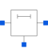
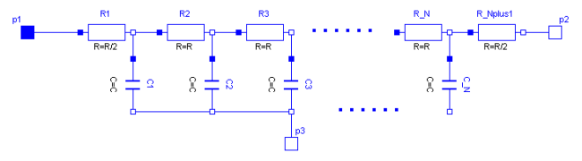

ULineLossy RC Line |

|
Information
This information is part of the Modelica Standard Library maintained by the Modelica Association.
As can be seen in the picture below, the lossy RC line ULine is a single conductor lossy transmission line which consists of segments of lumped series resistors and capacitors that are connected with the reference pin p3. The precision of the model depends on the number N of lumped segments.
To get a symmetric line model, the first resistor is cut into two parts (R1 and R_Nplus1). These two new resistors have the half of the resistance of the original resistor.

The capacitances are calculated with: C=c*length/N.
The resistances are calculated with: R=r*length/(N+1).
For all capacitors and resistors the values of each segment are the same except for the first and last resistor, that only has the half of the above calculated value.
The user has the possibility to enable a conditional heatport. If so, the ULine can be connected to a thermal network. When the parameter alpha is set to an value greater than zero, the ULine becomes temperature sensitive
due to their resistors which resistances are calculated by R_actual= R*(1 + alpha*(heatPort.T - T_ref)).
Note, this is different compared with the lumped line model of SPICE.
References
- Johnson, B.; Quarles, T.; Newton, A. R.; Pederson, D. O.; Sangiovanni-Vincentelli, A.
- SPICE3 Version 3e User's Manual (April 1, 1991). Department of Electrical Engineering and Computer Sciences, University of California, Berkley p. 22, p. 124
Parameters (8)
| r |
Value: Type: Real (Ω/m) Description: Resistance per meter |
|---|---|
| c |
Value: Type: Real (F/m) Description: Capacitance per meter |
| length |
Value: Type: Length (m) Description: Length of line |
| N |
Value: Type: Integer Description: Number of lumped segments |
| alpha |
Value: 0 Type: LinearTemperatureCoefficient (¹/K) Description: Temperature coefficient of resistance (R_actual = R*(1 + alpha*(T_heatPort - T_ref)) |
| useHeatPort |
Value: false Type: Boolean Description: =true, if HeatPort is enabled |
| T |
Value: 293.15 Type: Temperature (K) Description: Fixed device temperature if useHeatPort = false |
| T_ref |
Value: 300.15 Type: Temperature (K) |
Connectors (4)
| p1 |
Type: Pin |
|
|---|---|---|
| p2 |
Type: Pin |
|
| p3 |
Type: Pin |
|
| heatPort |
Type: HeatPort_a |
Components (2)
| R |
Type: Resistor[N + 1] |
|
|---|---|---|
| C |
Type: Capacitor[N] |